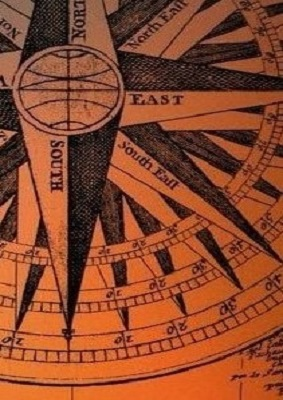
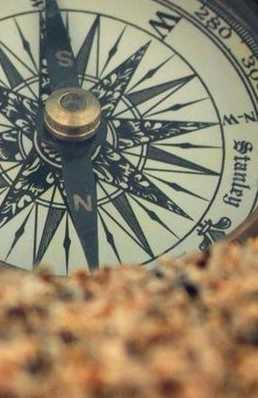
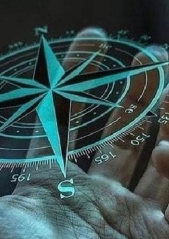

No se necesita empleados
Se necesita un trabajador que sude la camisa
Se necesita un trabajador que sude la camisa
Contenido
Una página web debe ser atractiva, pero no solo a la vista, sino también en el contenido.Eso significa que debe tener contenido interesante que atraiga (y atrape) al público objetivo.Eso servirá no solo para aumentar el número de nuevas visitas, sino para que los antiguos visitantes consulten la página a menudo y la usen como referencia.
Animaciones y movimiento
Para generar una sensación de dinamismo es bueno utilizar elementos animados. Lo ideal es que no sobrepasen el 20% del total de la página ya que de otra forma pueden causar saturación, distraer la atención de cosas importantes que se quieren decir y por último sacar al usuario del sitio.
Cuando las personas vean la página web y encuentren contenido educativo importante podrán ponerse en contacto con el recurso de correo electrónico del autor/autores, siempre y cuando se haya colocado el correo de contacto personal. El medio de contactarse con el autor debe ser de acceso fácil y privada.
CREA, DISEÑA Y NAVEGA
  Tips para crear una paginabweb
Planifica la idea de tu sitio web
Todo proyecto comienza con la fase de planificación. Aquí piensas en qué tipo de sitio web quieres crear y qué funciones debe tener. Por supuesto, esto depende principalmente de los objetivos que desees alcanzar con tu sitio web.
Elige la plataforma ideal para crear tu sitio web
Ahora que has elegido el tipo de sitio web ideal para ti, es hora de elegir la herramienta adecuada para lograr tu propósito. Un creador de sitios web (CMS o sistema de administración de contenido) como el de Wix te ofrece una variedad de opciones que puedes usar para crear tu sitio web. Hay docenas de plataformas disponibles en el mercado, pero no todas fueron creadas de la misma manera. ¿Aún no sabes cuál usar? Conozcamos un poco más a fondo las ventajas de crear un sitio web con Wix.
Buscatemas llamativos
El nombre de dominio es la primera parte de una
dirección Web que identifica al servidor que almacena y sirve su
sitio.
Busca prubas llamativas
Videos, mientras Internet es cada vez más
asequible, confiable y veloz, los programas de edición de video se
hacen más cercanos a los usuarios.
Buenos Sonidos y imagenes
Sonidos, un elemento cada vez más importante. La
comercialización de nuevos dispositivos digitales móviles como el
iPhone ha potencializado este elemento.